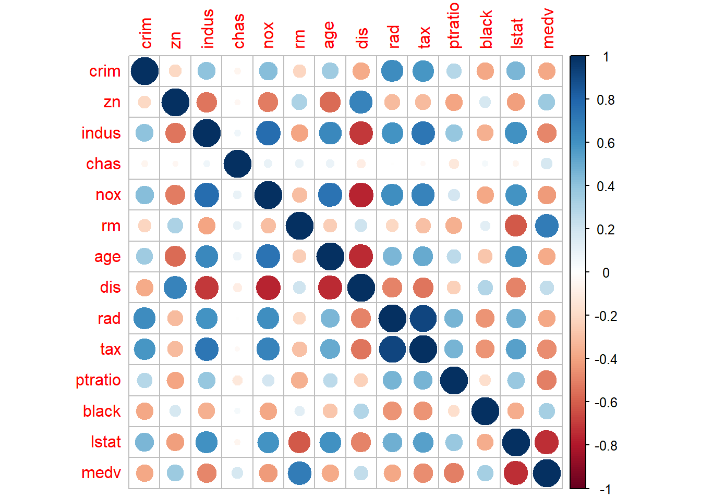

library(ISLR2)
library(tidyverse)
library(MASS)
data("Boston")
#?BostonChapter 2 - Exercise 10
This exercise involves the Boston housing data set. (a) To begin, load in the Boston data set. The Boston data set is part of the ISLR2 library. Now the data set is contained in the object Boston.
Read about the data set:
p_01
p_0b
How many rows are in this data set? How many columns? What do the rows and columns represent?
dim(Boston)[1] 506 14glimpse(Boston)Rows: 506
Columns: 14
$ crim <dbl> 0.00632, 0.02731, 0.02729, 0.03237, 0.06905, 0.02985, 0.08829,…
$ zn <dbl> 18.0, 0.0, 0.0, 0.0, 0.0, 0.0, 12.5, 12.5, 12.5, 12.5, 12.5, 1…
$ indus <dbl> 2.31, 7.07, 7.07, 2.18, 2.18, 2.18, 7.87, 7.87, 7.87, 7.87, 7.…
$ chas <int> 0, 0, 0, 0, 0, 0, 0, 0, 0, 0, 0, 0, 0, 0, 0, 0, 0, 0, 0, 0, 0,…
$ nox <dbl> 0.538, 0.469, 0.469, 0.458, 0.458, 0.458, 0.524, 0.524, 0.524,…
$ rm <dbl> 6.575, 6.421, 7.185, 6.998, 7.147, 6.430, 6.012, 6.172, 5.631,…
$ age <dbl> 65.2, 78.9, 61.1, 45.8, 54.2, 58.7, 66.6, 96.1, 100.0, 85.9, 9…
$ dis <dbl> 4.0900, 4.9671, 4.9671, 6.0622, 6.0622, 6.0622, 5.5605, 5.9505…
$ rad <int> 1, 2, 2, 3, 3, 3, 5, 5, 5, 5, 5, 5, 5, 4, 4, 4, 4, 4, 4, 4, 4,…
$ tax <dbl> 296, 242, 242, 222, 222, 222, 311, 311, 311, 311, 311, 311, 31…
$ ptratio <dbl> 15.3, 17.8, 17.8, 18.7, 18.7, 18.7, 15.2, 15.2, 15.2, 15.2, 15…
$ black <dbl> 396.90, 396.90, 392.83, 394.63, 396.90, 394.12, 395.60, 396.90…
$ lstat <dbl> 4.98, 9.14, 4.03, 2.94, 5.33, 5.21, 12.43, 19.15, 29.93, 17.10…
$ medv <dbl> 24.0, 21.6, 34.7, 33.4, 36.2, 28.7, 22.9, 27.1, 16.5, 18.9, 15…p_1b
Make some pairwise scatterplots of the predictors (columns) in this data set. Describe your findings.
pairs(Boston)
Also have correlation matrix in heatmap with labels
cor(Boston) crim zn indus chas nox
crim 1.00000000 -0.20046922 0.40658341 -0.055891582 0.42097171
zn -0.20046922 1.00000000 -0.53382819 -0.042696719 -0.51660371
indus 0.40658341 -0.53382819 1.00000000 0.062938027 0.76365145
chas -0.05589158 -0.04269672 0.06293803 1.000000000 0.09120281
nox 0.42097171 -0.51660371 0.76365145 0.091202807 1.00000000
rm -0.21924670 0.31199059 -0.39167585 0.091251225 -0.30218819
age 0.35273425 -0.56953734 0.64477851 0.086517774 0.73147010
dis -0.37967009 0.66440822 -0.70802699 -0.099175780 -0.76923011
rad 0.62550515 -0.31194783 0.59512927 -0.007368241 0.61144056
tax 0.58276431 -0.31456332 0.72076018 -0.035586518 0.66802320
ptratio 0.28994558 -0.39167855 0.38324756 -0.121515174 0.18893268
black -0.38506394 0.17552032 -0.35697654 0.048788485 -0.38005064
lstat 0.45562148 -0.41299457 0.60379972 -0.053929298 0.59087892
medv -0.38830461 0.36044534 -0.48372516 0.175260177 -0.42732077
rm age dis rad tax ptratio
crim -0.21924670 0.35273425 -0.37967009 0.625505145 0.58276431 0.2899456
zn 0.31199059 -0.56953734 0.66440822 -0.311947826 -0.31456332 -0.3916785
indus -0.39167585 0.64477851 -0.70802699 0.595129275 0.72076018 0.3832476
chas 0.09125123 0.08651777 -0.09917578 -0.007368241 -0.03558652 -0.1215152
nox -0.30218819 0.73147010 -0.76923011 0.611440563 0.66802320 0.1889327
rm 1.00000000 -0.24026493 0.20524621 -0.209846668 -0.29204783 -0.3555015
age -0.24026493 1.00000000 -0.74788054 0.456022452 0.50645559 0.2615150
dis 0.20524621 -0.74788054 1.00000000 -0.494587930 -0.53443158 -0.2324705
rad -0.20984667 0.45602245 -0.49458793 1.000000000 0.91022819 0.4647412
tax -0.29204783 0.50645559 -0.53443158 0.910228189 1.00000000 0.4608530
ptratio -0.35550149 0.26151501 -0.23247054 0.464741179 0.46085304 1.0000000
black 0.12806864 -0.27353398 0.29151167 -0.444412816 -0.44180801 -0.1773833
lstat -0.61380827 0.60233853 -0.49699583 0.488676335 0.54399341 0.3740443
medv 0.69535995 -0.37695457 0.24992873 -0.381626231 -0.46853593 -0.5077867
black lstat medv
crim -0.38506394 0.4556215 -0.3883046
zn 0.17552032 -0.4129946 0.3604453
indus -0.35697654 0.6037997 -0.4837252
chas 0.04878848 -0.0539293 0.1752602
nox -0.38005064 0.5908789 -0.4273208
rm 0.12806864 -0.6138083 0.6953599
age -0.27353398 0.6023385 -0.3769546
dis 0.29151167 -0.4969958 0.2499287
rad -0.44441282 0.4886763 -0.3816262
tax -0.44180801 0.5439934 -0.4685359
ptratio -0.17738330 0.3740443 -0.5077867
black 1.00000000 -0.3660869 0.3334608
lstat -0.36608690 1.0000000 -0.7376627
medv 0.33346082 -0.7376627 1.0000000cor(Boston) %>%
corrplot::corrplot()
Have correlation between crim with other variables
# Assuming Boston dataset is loaded and available
# Calculate the correlation matrix
cor_matrix <- cor(Boston)
# Extract the correlation of 'crim' with all other variables
crim_correlations <- cor_matrix["crim", ]
# Sort the correlations in descending order
sorted_crim_correlations <- sort(crim_correlations, decreasing = TRUE)
# Display the sorted correlations
print(sorted_crim_correlations) crim rad tax lstat nox indus
1.00000000 0.62550515 0.58276431 0.45562148 0.42097171 0.40658341
age ptratio chas zn rm dis
0.35273425 0.28994558 -0.05589158 -0.20046922 -0.21924670 -0.37967009
black medv
-0.38506394 -0.38830461 p_0c
Are any of the predictors associated with per capita crime rate? If so, explain the relationship.
p_0d
Do any of the census tracts of Boston appear to have particularly high crime rates? Tax rates? Pupil-teacher ratios? Comment on the range of each predictor.
Boston %>%
dplyr::select(crim, tax, ptratio) %>%
summary() crim tax ptratio
Min. : 0.00632 Min. :187.0 Min. :12.60
1st Qu.: 0.08205 1st Qu.:279.0 1st Qu.:17.40
Median : 0.25651 Median :330.0 Median :19.05
Mean : 3.61352 Mean :408.2 Mean :18.46
3rd Qu.: 3.67708 3rd Qu.:666.0 3rd Qu.:20.20
Max. :88.97620 Max. :711.0 Max. :22.00 library(tidyverse)
# Assuming the Boston dataset is available
# Summarize the range and identify high values for 'crim', 'tax', and 'ptratio'
summary_stats <- Boston %>%
summarise(
crim_min = min(crim),
crim_max = max(crim),
tax_min = min(tax),
tax_max = max(tax),
ptratio_min = min(ptratio),
ptratio_max = max(ptratio)
)
# Identify high values based on chosen thresholds (e.g., top 5% as high)
high_values <- Boston %>%
summarise(
high_crim = quantile(crim, 0.95),
high_tax = quantile(tax, 0.95),
high_ptratio = quantile(ptratio, 0.95)
) %>%
pivot_longer(cols = everything(), names_to = "variable", values_to = "threshold")
# Find the census tracts with particularly high values
high_tracts <- Boston %>%
filter(
crim > high_values$threshold[high_values$variable == "high_crim"] |
tax > high_values$threshold[high_values$variable == "high_tax"] |
ptratio > high_values$threshold[high_values$variable == "high_ptratio"]
) %>%
dplyr::select(crim, tax, ptratio)
# Print the range of each predictor
print("Summary of Ranges:")[1] "Summary of Ranges:"print(summary_stats) crim_min crim_max tax_min tax_max ptratio_min ptratio_max
1 0.00632 88.9762 187 711 12.6 22# Print the high value thresholds for each variable
print("Thresholds for High Values (Top 5%):")[1] "Thresholds for High Values (Top 5%):"print(high_values)# A tibble: 3 × 2
variable threshold
<chr> <dbl>
1 high_crim 15.8
2 high_tax 666
3 high_ptratio 21 # Display census tracts with high values
print("Census Tracts with High Values for 'crim', 'tax', or 'ptratio':")[1] "Census Tracts with High Values for 'crim', 'tax', or 'ptratio':"print(head(high_tracts)) crim tax ptratio
1 0.01360 469 21.1
2 0.25915 437 21.2
3 0.32543 437 21.2
4 0.88125 437 21.2
5 0.34006 437 21.2
6 1.19294 437 21.2p_0e
How many of the census tracts in this data set bound the Charles river?
Boston %>%
filter(chas == 1) %>%
nrow()[1] 35p_0f
What is the median pupil-teacher ratio among the towns in this data set?
Boston %>%
summarise(median_ptratio = median(ptratio)) median_ptratio
1 19.05p_0g
Which census tract of Boston has lowest median value of owner occupied homes? What are the values of the other predictors for that census tract, and how do those values compare to the overall ranges for those predictors? Comment on your findings.
# Find the census tract with the lowest median value of owner-occupied homes
lowest_medv_tract <- Boston %>%
filter(medv == min(medv)) %>%
dplyr::select(everything())
# Summarize the range of each predictor in the dataset
overall_ranges <- Boston %>%
summarise(across(everything(), list(min = min, max = max)))
# Display the census tract with the lowest 'medv'
print("Census Tract with the Lowest Median Value of Owner-Occupied Homes:")[1] "Census Tract with the Lowest Median Value of Owner-Occupied Homes:"print(lowest_medv_tract) crim zn indus chas nox rm age dis rad tax ptratio black lstat
1 38.3518 0 18.1 0 0.693 5.453 100 1.4896 24 666 20.2 396.90 30.59
2 67.9208 0 18.1 0 0.693 5.683 100 1.4254 24 666 20.2 384.97 22.98
medv
1 5
2 5# Display the overall ranges for comparison
print("Overall Ranges for Each Predictor:")[1] "Overall Ranges for Each Predictor:"print(overall_ranges) crim_min crim_max zn_min zn_max indus_min indus_max chas_min chas_max nox_min
1 0.00632 88.9762 0 100 0.46 27.74 0 1 0.385
nox_max rm_min rm_max age_min age_max dis_min dis_max rad_min rad_max tax_min
1 0.871 3.561 8.78 2.9 100 1.1296 12.1265 1 24 187
tax_max ptratio_min ptratio_max black_min black_max lstat_min lstat_max
1 711 12.6 22 0.32 396.9 1.73 37.97
medv_min medv_max
1 5 50p_0h
In this data set, how many of the census tracts average more than seven rooms per dwelling? More than eight rooms per dwelling? Comment on the census tracts that average more than eight rooms per dwelling.
# Count the number of census tracts with more than 7 rooms per dwelling
count_more_than_7 <- Boston %>%
filter(rm > 7) %>%
summarise(count = n())
# Count the number of census tracts with more than 8 rooms per dwelling
count_more_than_8 <- Boston %>%
filter(rm > 8) %>%
summarise(count = n())
# Display the results
print("Number of census tracts averaging more than 7 rooms per dwelling:")[1] "Number of census tracts averaging more than 7 rooms per dwelling:"print(count_more_than_7) count
1 64print("Number of census tracts averaging more than 8 rooms per dwelling:")[1] "Number of census tracts averaging more than 8 rooms per dwelling:"print(count_more_than_8) count
1 13# Display details of census tracts with more than 8 rooms per dwelling
tracts_more_than_8 <- Boston %>%
filter(rm > 8) %>%
dplyr::select(everything())
print("Details of census tracts averaging more than 8 rooms per dwelling:")[1] "Details of census tracts averaging more than 8 rooms per dwelling:"print(tracts_more_than_8) crim zn indus chas nox rm age dis rad tax ptratio black lstat
1 0.12083 0 2.89 0 0.4450 8.069 76.0 3.4952 2 276 18.0 396.90 4.21
2 1.51902 0 19.58 1 0.6050 8.375 93.9 2.1620 5 403 14.7 388.45 3.32
3 0.02009 95 2.68 0 0.4161 8.034 31.9 5.1180 4 224 14.7 390.55 2.88
4 0.31533 0 6.20 0 0.5040 8.266 78.3 2.8944 8 307 17.4 385.05 4.14
5 0.52693 0 6.20 0 0.5040 8.725 83.0 2.8944 8 307 17.4 382.00 4.63
6 0.38214 0 6.20 0 0.5040 8.040 86.5 3.2157 8 307 17.4 387.38 3.13
7 0.57529 0 6.20 0 0.5070 8.337 73.3 3.8384 8 307 17.4 385.91 2.47
8 0.33147 0 6.20 0 0.5070 8.247 70.4 3.6519 8 307 17.4 378.95 3.95
9 0.36894 22 5.86 0 0.4310 8.259 8.4 8.9067 7 330 19.1 396.90 3.54
10 0.61154 20 3.97 0 0.6470 8.704 86.9 1.8010 5 264 13.0 389.70 5.12
11 0.52014 20 3.97 0 0.6470 8.398 91.5 2.2885 5 264 13.0 386.86 5.91
12 0.57834 20 3.97 0 0.5750 8.297 67.0 2.4216 5 264 13.0 384.54 7.44
13 3.47428 0 18.10 1 0.7180 8.780 82.9 1.9047 24 666 20.2 354.55 5.29
medv
1 38.7
2 50.0
3 50.0
4 44.8
5 50.0
6 37.6
7 41.7
8 48.3
9 42.8
10 50.0
11 48.8
12 50.0
13 21.9